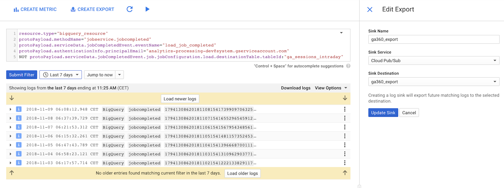

Its been a while since my last blog, although I had a good excuse as I’ve moved house into the Copenhagen suburbs, Brønshøj. But in the meantime, I have had the chance to find my new favourite tool for data engineering - Google Cloud Functions in Python.
This post will look at how to use them to work with the GA360 BigQuery export tables.
The code is available in this GitHub repo for useful cloud functions with Google Analytics
Google Cloud Functions
Cloud Functions are the highest level of abstraction on the serverless stack of the GCP, and offer you a way to just upload code, and then let Google take care of all the dev-ops underneath for serving the results of your function. They have preconfigured triggers, which you can use to run your code under certain circumstances, such as if a new object arrives in Google Cloud Storage; if you make a request to a HTTP endpoint; or if it receives a message from Pub/Sub, Google’s message broker service.
Up until recently they have only been available in Node.js, but the new Python 3 runtime is now in beta. Since I have much more experience with the latter, I took that as an excuse to try it out, and found it solved a lot of little data engineering tasks.
There are lots of use cases for Cloud Functions, some of my favourites are to create mini APIs, load BigQuery with files hitting Cloud Storage, or creating Slack commands
Scheduler vs Event based triggers
One major benefit is that it helps move you from a schedule based mindset (such as running scripts on a schedule/cron) to an event based one.
For example, the GA360 exports to BigQuery usually happen before 0900 for my clients, but that is not guaranteed. If you have all your data processing set for a schedule of 0910 say, its going to break if those exports are late.
An event based trigger just waits until it sees the data, then launches the code.
Another advantage is that event based workflows are asynchronous in the respect they can trigger in parallel. Going back to the GA360 example, a scheduled script may loop through each BigQuery table whilst doing its export - however an event based trigger will launch all the copy jobs at once.
Example: Copy GA360 exports to a partitioned table
As a demonstration, the script below shows how to create a cloud function that will copy a BigQuery GA360 data export to another table. You may want to do this to aggregate your datasets. However the use case here is to create a partitioned table version of the GA360 exports, to make them easier to work with.
Why partitioned tables?
Partitioned tables are a more modern take on organising date based BigQuery tables than the older sharded format. I’m pretty sure if the BigQuery exports were redone today they would be in partitioned tables, but the GA360 exports predate them.
Limitations
You can’t copy tables outside the region they are in (EU or US for example), for that check out the Cloudy McCloudface master Graham Polley with his article going through Cloud Dataflow.
Cloud functions only work on the same project they are deployed to, so you will need to put it in the same GCP project as the BigQuery exports.
Don’t make large heavy calculations in your cloud function. They should be light-weight “glue” that trigger larger operations, not calculating big transformations themselves.
1. Setup destination dataset and table
First create the dataset where you want the data to be copied to (such as ga360) in the same region of your existing BigQuery exports. By default this is US, but you may have set it up to be EU.
Create an empty partitioned table within the dataset called ga_sessions. You don’t have to specify a schema as that will be created when the first data hits it. You could choose to require a partition filter if you have a lot of data, to make sure people don’t query a lot of data by mistake.
2. Setup the logging export and pub/sub trigger
First I was disappointed that there wasn’t a “BigQuery table ready” event for Cloud Functions…
@felipehoffa a trigger every time BigQuery datasets get a new table would be cool, to feed into cloud functions/pubsub etc
— Mark Edmondson (@HoloMarkeD) September 26, 2018
…but then I realised that you can create almost any trigger you want using the cloud log viewer within the GCP console.
With its use of advanced filters, any event thats happening in your GCP can be narrowed down, and then by using its “Create Export” button you can turn that filter into a Pub/Sub trigger, which Cloud Functions can use.
Here is the filter I use. It uses the analytics-processing-dev@system.gserviceaccount.com email you give to enable GA360 BigQuery exports to narrow down, and then prevents the ga_sessions_intraday tables from appearing, as they are not final data.
Put this in your logging filter:
resource.type="bigquery_resource"
protoPayload.methodName="jobservice.jobcompleted"
protoPayload.serviceData.jobCompletedEvent.eventName="load_job_completed"
protoPayload.authenticationInfo.principalEmail="analytics-processing-dev@system.gserviceaccount.com"
NOT protoPayload.serviceData.jobCompletedEvent.job.jobConfiguration.load.destinationTable.tableId:"ga_sessions_intraday"Now use “Create Export” and select the “Cloud Pub/Sub” Sink Service. This is the Pub/sub topic that the cloud function will subscribe too, and will update every new logging entry.
It should look like this:

3. Write the code
The code is available in this GitHub repo for useful cloud functions with Google Analytics
The code is adapted from the Cloud Pub/Sub tutorial for Cloud Functions.
You will need to specify the pip requirements for your code in a requirements.txt file, but you don’t have to actually upload the libraries as you do for say App Engine. Cloud Functions will download them for you when you deploy.
This requirements.txt file only imports the BigQuery Python client:
google-cloud-bigquery==1.5.1The full Python code is below, with some walkthrough afterwards:
import logging
import base64
import json
from google.cloud import bigquery
import re
# replace with your dataset
DEST_DATASET = 'REPLACE_DATASET'
def make_partition_tbl_name(table_id):
t_split = table_id.split('_20')
name = t_split[0]
suffix = ''.join(re.findall("\d\d", table_id)[0:4])
name = name + '$' + suffix
logging.info('partition table name: {}'.format(name))
return name
def copy_bq(dataset_id, table_id):
client = bigquery.Client()
dest_dataset = DEST_DATASET
dest_table = make_partition_tbl_name(table_id)
source_table_ref = client.dataset(dataset_id).table(table_id)
dest_table_ref = client.dataset(dest_dataset).table(dest_table)
job = client.copy_table(
source_table_ref,
dest_table_ref,
location = 'EU') # API request
logging.info('Copy job: dataset {}: tableId {} -> dataset {}: tableId {} - '
'check BigQuery logs of job_id: {} for status'.format(
dataset_id, table_id, dest_dataset, dest_table,
job.job_id))
def extract_data(data):
"""Gets the tableId, datasetId from pub/sub data"""
data = json.loads(data)
table_info = data['protoPayload']['serviceData']['jobCompletedEvent']['job']['jobConfiguration']['load']['destinationTable']
logging.info('Found data: {}'.format(json.dumps(table_info)))
return table_info
def bq_to_bq(data, context):
if 'data' in data:
table_info = extract_data(base64.b64decode(data['data']).decode('utf-8'))
copy_bq(dataset_id=table_info['datasetId'], table_id=table_info['tableId'])
else:
raise ValueError('No data found in pub-sub')Handling pub/sub functions
The functions below take care of processing the pub/sub data. All data arrives as a base64 encoded string, which is extracted. This extraction is in the same format as the logs - the extract_data() function parses out what is needed for the BigQuery copy job, namely the table_id. You can adapt this as needed if you need other information for your code.
As detailed in the tutorial, the Pub/sub trigger needs to be processed by a function expecting the data and context arguments. That is the bq_to_bq(data, content) function below.
def extract_data(data):
"""Gets the tableId, datasetId from pub/sub data"""
data = json.loads(data)
table_info = data['protoPayload']['serviceData']['jobCompletedEvent']['job']['jobConfiguration']['load']['destinationTable']
logging.info('Found data: {}'.format(json.dumps(table_info)))
return table_info
def bq_to_bq(data, context):
if 'data' in data:
table_info = extract_data(base64.b64decode(data['data']).decode('utf-8'))
copy_bq(dataset_id=table_info['datasetId'], table_id=table_info['tableId'])
else:
raise ValueError('No data found in pub-sub')Copy the BigQuery table functions
The functions below then create the table_id you want to write to. This basically means taking the table name ga_sessions_20171011 and turning it into ga_sessions$20171011, so that the partitioned table is written to the same date partition as the export.
In the example below, adapted from here, it then creates the BigQuery job to copy.
Note here we do not wait for the job to finish - we are in an event style mindset, so just want to trigger and finish. Instead we just return the jobId, so that you can examine it the BigQuery logs if you need to.
def make_partition_tbl_name(table_id):
t_split = table_id.split('_20')
name = t_split[0]
suffix = ''.join(re.findall("\d\d", table_id)[0:4])
name = name + '$' + suffix
logging.info('partition table name: {}'.format(name))
return name
def copy_bq(dataset_id, table_id):
client = bigquery.Client()
dest_dataset = DEST_DATASET
dest_table = make_partition_tbl_name(table_id)
source_table_ref = client.dataset(dataset_id).table(table_id)
dest_table_ref = client.dataset(dest_dataset).table(dest_table)
job = client.copy_table(
source_table_ref,
dest_table_ref,
location = 'EU') # API request
logging.info('Copy job: dataset {}: tableId {} -> dataset {}: tableId {} - '
'check BigQuery logs of job_id: {} for status'.format(
dataset_id, table_id, dest_dataset, dest_table,
job.job_id))4. Deploy
Now all that remains is to deploy the function. The code above needs to be saved to a file called main.py and then put into the same folder as requirements.txt:
-|
|- main.py
|- requirements.txtYou may need to then install the gcloud beta components to deploy the python. See the guide here.
After you have it installed, browse to the folder holding your code in your console, and then issue the gcloud commands to deploy the files. It takes around 2 mins.
You need to specify the function that will trigger. In our case this is the function that receives the data, def bq_to_bq(data, context). We also need to specify its a Python file, and what the trigger will be:
gcloud functions deploy bq_to_bq \
--runtime python37 \
--trigger-resource ga360_export \
--trigger-event google.pubsub.topic.publishThe --trigger-resource should be the name of the logging export you did in step 2.
Once deployed you should start seeing your GA360 tables being copied over to your new partitioned table dataset from the next day’s exports. In your Cloud Function logs you should be able to see the copy jobs as they occur with the BigQuery jobIds, and in your BigQuery logs for that jobId the status of the task. You could even set up error alerting by creating log-based metrics and exporting it to Stackdriver, to send an email or Slack message if things go awry.
Summary
Hopefully this helps you integrate Cloud Functions into your own workflows. You can see that the code is minimal and for the right type of job has low upkeep without too much development work. Whilst not suited to every task, they have quickly become a useful tool in my toolbox for moving data around.